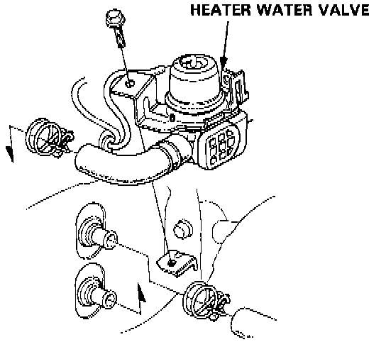
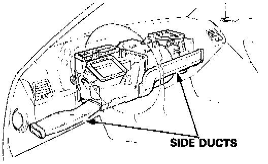
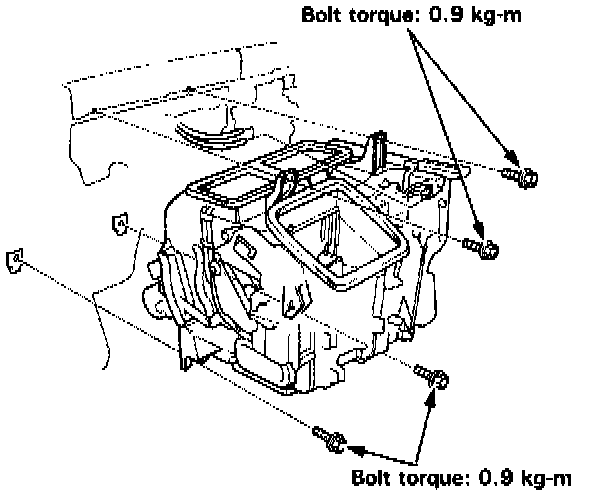

Automatic Climate Control
REMOVAL1. Drain the radiator coolant.

2. Loosen the clamp to disconnect the heater hoses at the heater.
CAUTION:
- Coolant will run out when the hoses are disconnected: drain it into a clean drip pan. Coolant will damage the painted surface.
3. Remove the dashboard. Service and Repair

4. Remove the side ducts.
5. Disconnect the wire harness and vacuum hoses.

6. Remove the heater mounting bolts (2) and mounting nuts (2), then remove the heater from the body.
INSTALLATION
Install in the reverse order of removal, and:
- Apply sealant to the grommets
- Do not interchange the inlet and outlet hoses. Make sure that the hose clamps are secure.
- The A/C system must have been evacuated completely.
- Connect the vacuum hose properly and check the hose for bends. breakage or pinching.